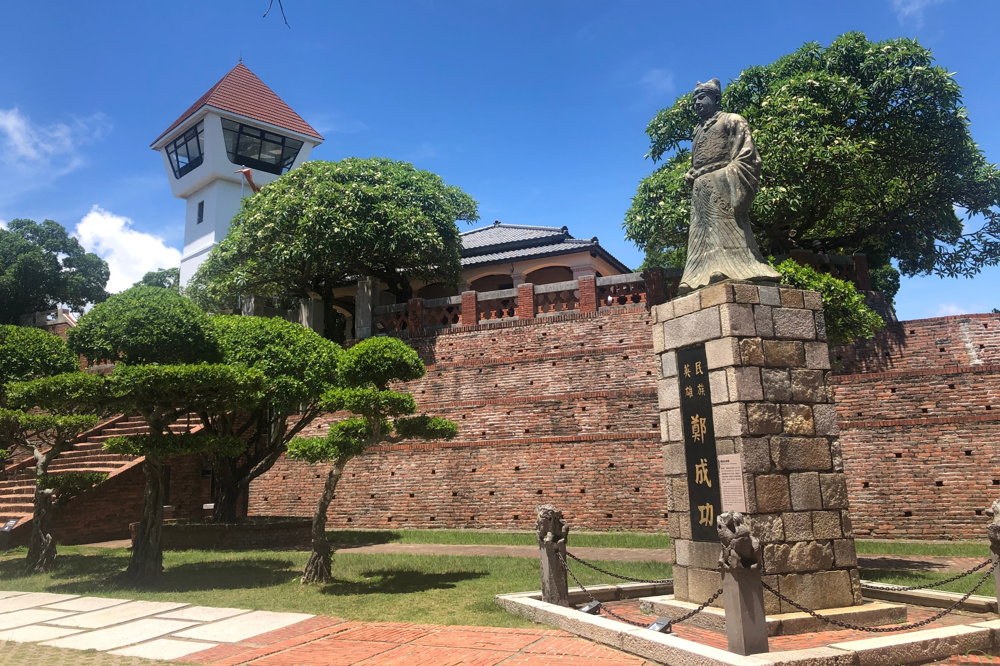
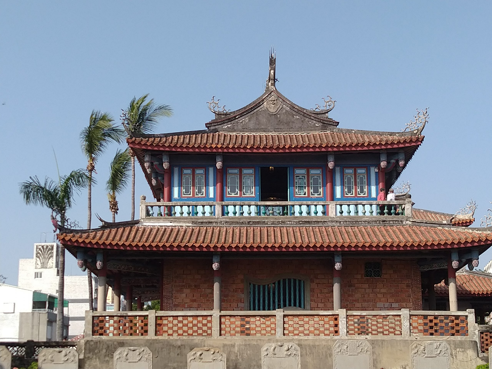
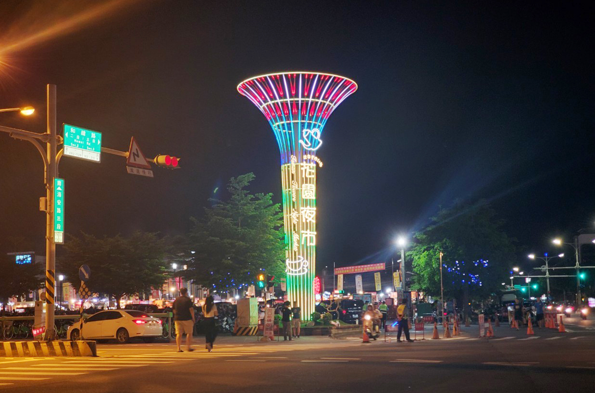

探索台南
台灣歷史最悠久的城市，擁有豐富的文化遺產和美食，如赤崁樓和安平古堡。以下是台南著名的景點:

安平古堡
安平古堡位於台南市安平區效忠街、國勝路上，古稱奧倫治城(Orange)、熱蘭遮城(Zeelandia)、安平城、臺灣城，俗名紅毛城、番仔城或王城，最早建於1624年，荷蘭人在『一鯤鯓』建立一座簡單的砦城，這就是安平古堡的前身是台灣最古老的城堡，因此曾是荷蘭人統治台灣的中樞、也曾經是鄭氏王朝三代的宅第，舊熱蘭遮城分內外二部，城垣範圍包括台灣最早的延平市街。

赤崁樓
赤崁樓乃荷蘭人於西元1653年創建，原稱普羅民遮城（Provintia荷文為永恆之意），漢人則稱之為「赤崁樓」、「番仔樓」或「紅毛樓」；「赤崁樓」雖歷代都有改建，至今仍大約維持原貌。 赤崁樓從荷蘭時期便是行政中心，西元1661年鄭成功改普羅民遮城為承天府治。

孔廟
孔廟為中國儒家文化的具體象徵。 山東曲阜孔廟為中國最大也是最古老的孔廟，它是從孔子的故居演變而來，經過兩千年的擴建，形成今日宏偉壯麗的規模，並且成為中國各省孔廟模仿的藍圖。 至明清時期，各府縣大都建有孔廟，稱為儒學，兼有教育之功能。

花園夜市
花園夜市是台南最熱鬧的夜市之一，這裡有各種美食、商品和娛樂設施，是遊客和本地人喜愛的夜晚去處。在花園夜市，你可以品嚐到台灣各地的特色小吃，如擔仔麵、碗粿、鹹粥等。